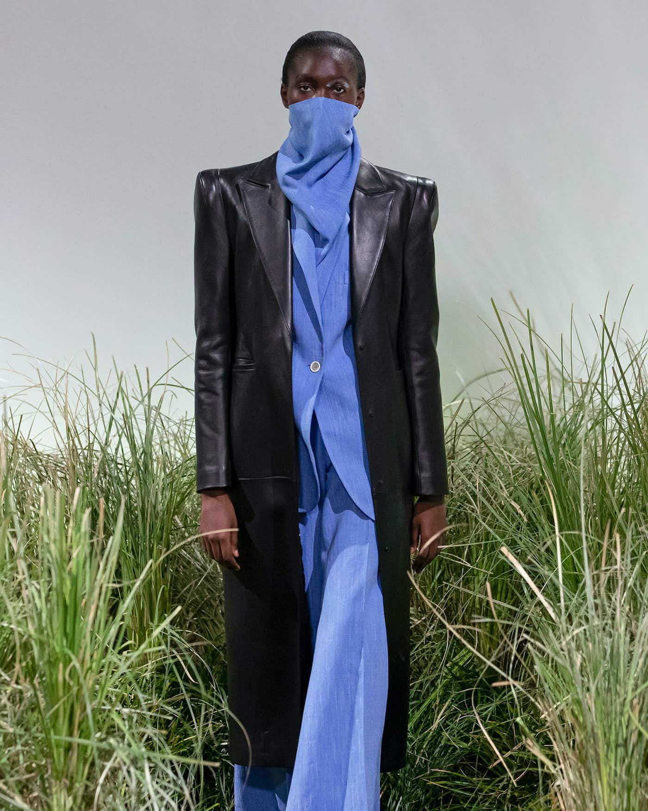
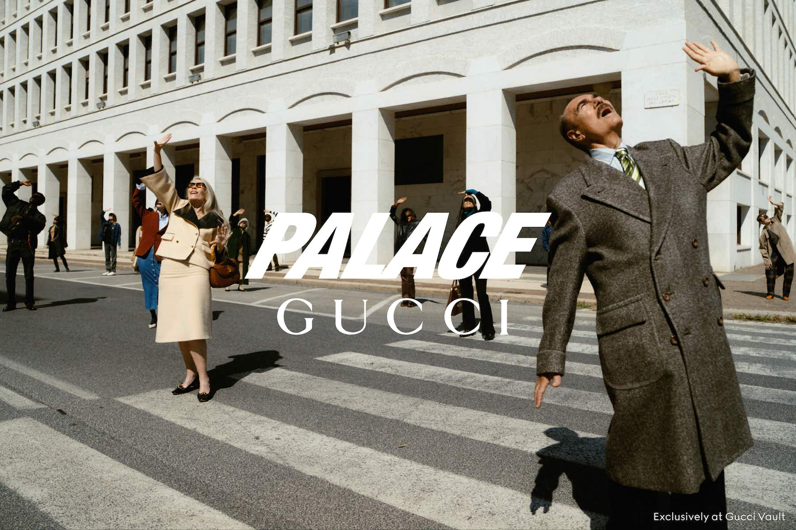

50 years of the Superst
Now in its 50th year, the adidas Superstar is a shoe nestled at the intersection of sneakers, streetwear and rap, worn by B‑ballers, hip-hoppers, acid jazzers and singers over the years. From the moment that hip-hop trio Run-DMC cemented the shoe’s iconic pop cultural status in the mid-1980s with their track My Adidas, through to its reworks by pop culture icon Pharrell Williams and avant-garde fashion designer Rick Owens – the Superstar was, and still is, a cultural signifier. The Superstar’s iconic status is an amalgam of the very same reference points that gave rise to streetwear – hip-hop, skateboarding and sportswear – all of which are reflected in the Superstar archives. From collaborations with A Bathing Ape, to a bespoke run of Beastie Boys Superstars – journey through 50 years of the adidas shelltoe in the gallery below.”

F-LAGSTUF-F is the Tokyo streetwear export, weaving its roots in the global fashion scene thanks to its eye-catching graphic tees and authentic skate roots..
The brainchild of Nobuyuki Murayama, F‑LAGSTUF‑F is the by-product of a lifelong obsession with anime, ’90s US skate culture and music. Think camp collar printed shirts, American-inspired graphics and striking colour combos across a range of streetwear silhouettes. F‑LAGSTUF‑F’s signature is the graphic tee. Thanks to Murayama’s former position as head buyer at cult Japanese vintage store BerberJin, the brand has a huge amount of references to take inspiration from, built from years of trawling American thrift shops and the vintage mecca of Tokyo’s Harajuku district. A play on words, the name reflects the founder’s time spent travelling the city of Flagstaff, Arizona, sourcing rare vintage pieces and original band tees. While the vintage Americana influences can be felt in each collection, the designer stresses that the collections are not confined to any country or genre. (The most recent drop went from tactical mesh vests and Larry Clark-inspired “punk picasso” tees, to a psychedelic paisley jacket.)

This season, Virgil Abloh follows a stream of designers tapping into the digitally reliant world of today with a first-time co-ed collection feeling as present as ever
Last week, Off-White™’s founder and creative director, Virgil Abloh, teased the brand’s upcoming SS21 show with a refreshingly non-cryptic statement: “Think personal connections through a public platform,” he said. “Connecting the dots of distance through a global language. Linking up, even though we may be thousands of miles apart.” Abloh’s latest collection, presented yesterday, honed in on the complex shift in interface over the past year, where the world-at-large has become reliant on technological advances to find new ways of staying connected, whether through work or play. The main event of Off-White™’s collection reveal was “Imaginary TV” – a globally-interconnected digital event featuring an interactive forum of television-style channels. In attendance, Abloh’s friends and collaborators, like NTS DJ Ash Lauryn, dancer Letizia Galloni and artist Prince Gyasi, who performed in surveillance mini-shows covering visual art, theatre, skating, DJ sets and graffiti. With entertainment outside the confines of our four walls grinding to a screeching halt, Abloh’s vision of a dystopian TV set-up seemed like a considered take on the rise in square-eyed entertainment over the past year – Brits alone have spent 40 per cent of their waking hours watching TV. It’s a bitter pill to swallow, but our escapism has been limited to the box, Netflix, Amazon Prime, and so forth. But Abloh’s inclination to champion inclusivity as well as industry and consumer interaction was considered throughout. In the digital space, onlookers could witness the range of artistic practices coming together as one, like merging luxury fashion with fringe cultures – a kid spray painting a white van, another skating on a ramp, and a shadowboxing performance. The collection itself merged menswear and womenswear for the first time, further fuelling an industry-wide question mark on the need for gender-dividing collections. While “Imaginary TV” provided a viewing platform, the 44-look collection, titled Adam is Eve, was a mature response to a seemingly never-ending lack of daily structure, told through tailoring. Blazers were in abundance for men and women, in buttery brown leather or bright canary yellow. The cut, length and volume of sharp shoulders and heavy lapels felt fluid, while interchangeable elements, like unisex shirts and skirts, were an optimistic nod. Abloh sticks to block colours throughout, with prints appearing only to accentuate the flourish and movement of a plunging shirt or cinched in jacket. Further bringing it to the present was the addition of co-ord facemasks fashioned as triangular bandanas, blending in with their lilac, mint and jet black pieces. This collection marks the brand’s initial dive into a see-now-buy-now regime, with selected pieces already available at off-white.com and luxury online retailer, Farfetch. It’s a move luxury labels have toyed with for quite some years, improving luxury-to-customer feasibility and, potentially, waste. “This delivery-staggering demonstrates Off-White™’s disruptive new business model of presenting collections and immediately following these unveilings with the first drop,” the show notes suggest, “whereby the rest of the lineup is released throughout the season.”
After Maddy Perez’s New Year’s fit graced our screens in the first episode of Euphoria season two, searches for “black cutout dresses” soared 890%. Is it time for gorgeous, gorgeous girls to throw the trackies in the bin?.
What springs to mind when you think of a “black cut-out bodycon dress”? Alaïa’s sexy ’80s archive? ’90s pioneer Hervé Leger? Or perhaps Nicole Sherzinger’s equally groundbreaking 2015 Missguided collab? Personally, I’m somewhere in the grey zone: a mid-week club night at Oceana Milton Keynes dancing in clouds of Hollister body spray and necking shots of Apple Sourz. But that’s no disrespect to the cut-out LBD. It was a dress that ruled Friday nights on British high streets for the best part of a decade – no mean feat. The hazy memories of WKD and fake tan don’t tarnish its legacy, they only add to it. It’s a sartorial classic. A dress of the people. Back in 2016, Mail Online declared bodycon dresses were finally out, having “fallen victim to their own popularity”. But the trend cycle just keeps on cyclin’. It’s only been six years, and the cut-out bodycon is back with a bang, thanks to Alexa Demie as Maddy Perez in HBO’s Euphoria, which debuted the first episode of its second series last week. In true, blue-tinged Euphoria style, the episode was full of outfit inspo. But it was Queen Bee Maddy’s New Year’s Eve fit – a tight black cut-out mini dress with matching gloves by independent Mexican label Akna Stores – that stole the show. The look, which gives Instagram baddie-turned-goth, prompted a flurry of internet activity. Lyst reported an 890% increase in searches for “black cutout dresses” after the episode aired, and Akna Stores was left overwhelmed with pre-orders. (Not that Gen Z was phased – cue savvy teens sharing their homemade creations on Twitter and TikTok). True, most of us haven’t worn a black cut-out dress since our teens, but they never really went anywhere. They’ve just been lurking in the Boohoo sale section and on influencers with suspiciously Kardashian-like proportions, waiting for their next Big Fashion Moment. Now, here it is. Designers like London-based LVMH prize-winner Nensi Dojaka, whose viral cut-out dress was Lyst’s 10th most-searched-for item of 2021, plus the likes of Kendall Jenner and Dua Lipa, have all been setting the agenda for a cut-out resurgence one grid post at a time. But it’s this banging look from Alexa that feels cool. Really cool. It’s a testament to Euphoria’s finger on the ever-changing Gen Z pulse and Maddy Perez’ status as a proper on-screen fashion icon beloved by fans for her strength and eye-rolls, and famed for her glam Y2K co-ords, such as the purple I Am Gia set that went viral last year. The cut-out LBD speaks to our 2022 mood, too. In an interview with Vogue, Euphoria’s costume designer Heidi Bivens explains how Maddy’s series two style has a darker vibe that reflects her desire for independence and freedom. To be honest, the same could be said for all of us. After two years in and out of lockdown, it’s no coincidence that the cut-out LBD, a club classic, is coming back now. Time for gorgeous, gorgeous girls to throw the trackies in the bin.

Flying corner shops! Bathing aliens! Gucci’s collaboration with Palace has been made official, and the campaign is going to blow your mind
The early birds truly caught the wormhole this morning. In a strange fold in the fabric of fashion spacetime, Gucci and Palace ran a simultaneous post on Instagram. “THINGS ARE LOOKING UP” read the caption, accompanying a cinematic image of smartly-dressed folk at a zebra crossing staring agape at the skies. It followed rumours earlier in the week that the two ever-trending brands might be cooking something up. But was it real? Sì! Gucci made it official this morning, announcing that it had collaborated with the London skateboarding label for a new collection: Palace Gucci. Filed under the Gucci Vault, it unlocks the potential of Palace’s streetwear sensibilities, celebrating the power of merging together two clashing worlds and the surreal results of splicing together two realities. So what happens when you bang together two polar-opposite fashion magnates and force them to attract? Magic, that’s what. Built on the fusion of Palace’s ‘Tri-Ferg’ calling card and Gucci’s double‑G logo, it sees the skatewear brand’s soccer tees and trackies elevated to cosmic heights with Gucci’s sartorial savoir-faire. It works in reverse too; Gucci’s monogram is given a new lick of paint with bubblegum-pink and baby-blue colourways and it’s horse-bit loafers are made street-ready with a gold P charm. Notably, it features Palace’s first ever womenswear collection; but it’s all so good you’ll want to wear everything anyway. But now for the big question – what on earth or elsewhere were the commuters staring at? A flying corner shop, of course! A talking newsagents descending from the skies and declaring “Prepare yourselves!” sets the scene for one of the most supercharged campaigns we’ve seen all year; honestly, this two and a half minute video packs in more pizazz than most two and a half hour films. After the offie flies off and a South London lad in the collection’s new all-over strawberry print top apologises for the traffic being a nightmare, it lurches to a pool party rave soundtracked by Prodigy’s nineties classic Out Of Space and pure chaos resides. It’s hard to describe what happens next, but it’s truly and utterly bonkers, featuring cameos and kooky cutscenes galore from wide-eyed cats, Michelian twins and a lathered-up alien in a bathtub. It’s the kind of campaign to make you fall in love with fashion all over again, a reminder of how euphoric that first purchase you made felt. The two galaxies continue to collide with a combination of luxury surroundings with stoner visions, seen most clearly when two meticulously-groomed poodles watch a Palace skate video in a decadently decorated lounge. Then, after the credits roll, there’s an ace bit of metadrama seeing a board room of puppets talk through the advert they just created. “People laughed – they said it couldn’t be done!” they cackle, before one of the muppets mentions their love for the “subversive nihilistic cultural ennui of the subtext”. It’s the end chant, though, that pretty much sums up our excitement for the entire affair and is worthy of shouting gratefully to the heavens above: “Palace! Gucci! Palace! Gucci!”
